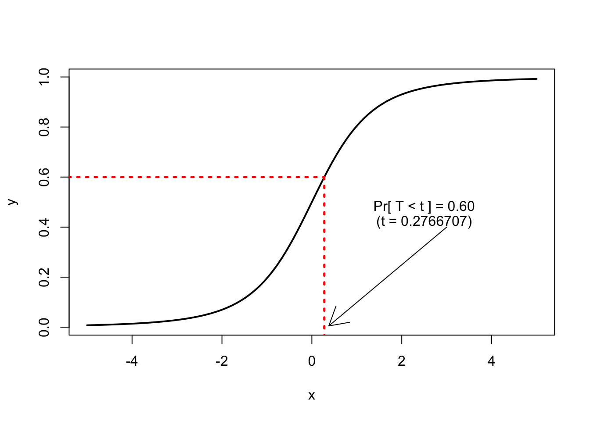

Density functions represent realization patterns of continuous random variables. The following is the density function of the standard normal distribution: $$\phi(x) = \frac{1}{\sqrt{2\pi\sigma^2}}\exp\left\{- \frac{(x-\mu)^2}{2\sigma^2}\right\}$$
x <- seq(-5, 5, length=100)
y <- dnorm(x, mean=0, sd=1)
plot(x, y, type="l")The function dnorm means the density of a normal distribution. Similarly, dt, dchisq, and dunif are functions for the density of t, chi-squared, uniform distribution.
The function pnorm
p1 <- pnorm(2) # Pr[ X < 2 ]
p2 <- 1-pnorm(2) # Pr[ X > 2 ]
p3 <- pnorm(2, lower.tail=FALSE) # Pr[ X > 2 ]
p4 <- pnorm(1)-pnorm(-2) # Pr[ -2 < X < 1 ]
print(c(p1, p2, p3, p4))## [1] 0.97724987 0.02275013 0.02275013 0.81859461The function qnorm is quantile function for the normal distribution.
q1 <- qnorm(0.95) # { x : Pr[ X < x ] = 0.95}
print(q1)## [1] 1.644854pt(1, df=3) - pt(-2, df=3) # Pr[ 1 < X < 3 ]## [1] 0.7348359qt(0.60, df=3)## [1] 0.2766707
pchisq(3, df=5)-pchisq(1, df=5) # Pr[ 1 < X < 3 ]## [1] 0.2625799qchisq(0.60, df=5)## [1] 5.131867pf(3, df1=4, df2=10)-pf(1, df1=4, df2=10)## [1] 0.3792318qf(0.60, df1=4,df2=10)## [1] 1.120273binorm <- function(x, m, Sig){
exp(-.5 * diag(t(x-m) %*% solve(Sig) %*% (x-m))) / sqrt(2 * pi * det(Sig))
}
m <- c(0,0)
Sig0 <- matrix(c(1.0, 0.0, 0.0, 1.0), 2, 2)
Sig5 <- matrix(c(1.0, 0.5, 0.5, 1.0), 2, 2)
x <- seq(-3, 3, length=50)
y <- seq(-3, 3, length=50)
#### z ###############################################
fxy0 <- binorm( t(expand.grid(x,y)), m, Sig0)
dim(fxy0) <- c(length(x),length(y))
fxy5 <- binorm( t(expand.grid(x,y)), m, Sig5)
dim(fxy5) <- c(length(x),length(y))
###################################################################
#library(rgl)
#surface3d(x, y, fxy5, theta = 345, phi = 35,col="blue",front="lines")par(cex.lab=2)
par(cex.axis=1.75)
par(las=1)
par(mfrow=c(3,2)) # 1.5:1 aspect ratio
####################################################################
####################################################################
## Perspective Plot
persp(x, y, fxy0, theta = 15, phi = 40,col="white",main="Bivariate Normal Density (corr=0.0)")
persp(x, y, fxy5, theta = 15, phi = 40,col="white",main="Bivariate Normal Density (corr=0.5)")
#mtext(expr.seq[j])
####################################################################
## Contour Plot
####################################################################
par(lwd=2,mgp=c(2,1,0))
contour(x, y, fxy0, col="blue", drawlabels=TRUE, nlevels=6,
xlab=expression(X), ylab=expression(Y),
main="Contour / Conditional Density at X=0.7",
lwd=2, xlim=range(x), ylim=range(y),
frame.plot=TRUE, axes=FALSE, xaxs = "i", yaxs = "i")
axis(1, labels=TRUE, lwd.ticks=2)
axis(2, labels=TRUE, lwd.ticks=2)
##############################################
abline(v=.7, lwd=1.5, lty=2, col="blue")
##################################################################################################################
## Contour Plot
####################################################################
par(lwd=2,mgp=c(2,1,0))
contour(x, y, fxy5, col="blue", drawlabels=TRUE, nlevels=6,
xlab=expression(X), ylab=expression(Y),
main="Contour / Conditional Density at X=0.7",
lwd=2, xlim=range(x), ylim=range(y),
frame.plot=TRUE, axes=FALSE, xaxs = "i", yaxs = "i")
axis(1, labels=TRUE, lwd.ticks=2)
axis(2, labels=TRUE, lwd.ticks=2)
##############################################
abline(v=.7, lwd=1.5, lty=2, col="blue")
##############################################
###############################################################
f <- function(x1,x2) binorm(t(cbind(x1,x2)), m, Sig5)
###############################################################
x.s <- seq(from=min(x), to=max(x), by=0.1)
vals <- f(0.7, x.s)
fx <- dnorm(0.7, m[1], Sig5[1,1]^0.5)
lines( vals-abs(min(x)), x.s, lty=2, lwd=1.5, col="blue")
lines( vals/fx-abs(min(x)), x.s, lty=1, lwd=1.5, col="red")
###############################################################
text(1, -2, labels=expression(X==0.7))
text(-2.0, 1.5, labels=expression( f(y / x==0.7) ), col="red")
text(-2.2, 0.5, labels=expression( f(0.7, y) ), col="blue")
legend(-2, 3, c("sectional view at x=0.7","condi. dens. of Y at x=0.7"),
lty=c(2,1),col=c("blue","red"),lwd=1.5)par(lwd=2,mgp=c(2,1,0))
contour(x, y, fxy0, col="blue", drawlabels=TRUE, nlevels=6,
xlab=expression(X), ylab=expression(Y),
main="Contour / Marginal Density",
lwd=2, xlim=range(x), ylim=range(y),
frame.plot=TRUE, axes=FALSE, xaxs = "i", yaxs = "i")
axis(1, labels=TRUE, lwd.ticks=2)
axis(2, labels=TRUE, lwd.ticks=2)
###############################################################
# Marginal density function: Left side solid
###############################################################
marginal.X <- function(x) exp(-(x-m[1])^2/(2*Sig0[1,1])) / (sqrt(2*pi*Sig0[1,1]))
# Left side solid
vals <- marginal.X(x.s)
lines(vals-abs(min(x)), x.s, lty=1, lwd=2, col="red")
text(-2.3, 0.5, labels=expression( f(y) ), col="red")
legend(-2, 2.8, c("marginal denssity of Y"),lty=c(1),col=c("red"),lwd=2)par(lwd=2,mgp=c(2,1,0))
contour(x, y, fxy5, col="blue", drawlabels=TRUE, nlevels=6,
xlab=expression(X), ylab=expression(Y),
main="Contour / Marginal Density",
lwd=2, xlim=range(x), ylim=range(y),
frame.plot=TRUE, axes=FALSE, xaxs = "i", yaxs = "i")
axis(1, labels=TRUE, lwd.ticks=2)
axis(2, labels=TRUE, lwd.ticks=2)
###############################################################
# Marginal density function: Left side solid
###############################################################
marginal.X <- function(x) exp(-(x-m[1])^2/(2*Sig5[1,1])) / (sqrt(2*pi*Sig5[1,1]))
# Left side solid
vals <- marginal.X(x.s)
lines(vals-abs(min(x)), x.s, lty=1, lwd=2, col="red")
text(-2.3, 0.5, labels=expression( f(y) ), col="red")
legend(-2, 2.8, c("marginal density of Y"),lty=c(1),col=c("red"),lwd=2)